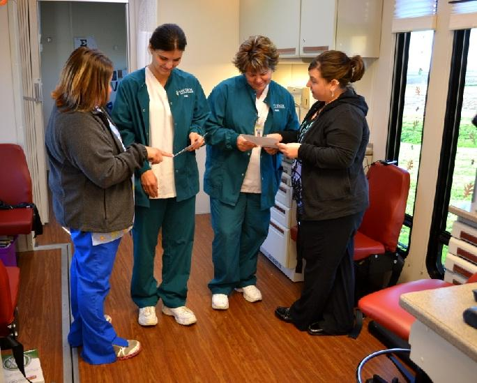

Health Center Provides Shadowing Experience for Students
October 15, 2012
The Vermillion-Parke Community Health Center (VPCHC) hosted a shadowing experience for nursing students of Ivy Tech Community College – Terre Haute, on its Mobile School-Based Health Center, in support of the National Health Service Corps Community Day on October 11th. This opportunity provided students experience and education about careers in primary health care in a medically underserved community.
The National Health Service Corps (NHSC) provides financial, professional and educational resources to medical, dental, and mental and behavioral health care providers who bring their skills to areas of the United States with limited access to health care. The NHSC Community Day is designed to celebrate the important work of the Corps in increasing access to primary care where it’s needed most, through various events and activities across the United States.
According to the NHSC website, more than 40,000 primary care medical, dental, and mental and behavioral health professionals have served in the National Health Service Corps since its inception. In addition to Corps clinicians currently providing care, nearly 1,000 students, residents, and health providers receive scholarships or participate in the Student to Service Loan Repayment program, to prepare to practice.
VPCHC is home to three National Health Service Corps scholars, which includes medical provider, Dr. Greg Brock, D.O., and behavioral health providers, Dr. Julia Wernz, Ph.D., HSPP, and Dr. Jonathan Leggett, Ph.D., HSPP.
Established in 1970, the National Health Service Corps, administered by HHS’ Health Resources and Services Administration, has provided health care to communities across the country by supporting more than 42,000 primary health care practitioners over its 40-year history. Visit http://nhsc.hrsa.gov for more information.
VPCHC is a Federally Qualified Health Center (FQHC) dedicated to providing comprehensive primary health care and related services for ALL individuals and families. VPCHC provides primary and preventive health care services, along with behavioral health services to the citizens of Vermillion and Parke counties, and surrounding communities.

Photo: Ivy Tech Community College nursing students Dusty Watkins and Dawn Clinkenbeard participated in a shadowing experience through the VPCHC Mobile School-Based Health Center, with VPCHC nurse Amy Clarkson and Family Nurse Practitioner Jennifer Inman, to learn about careers in primary health care in a medically underserved community.